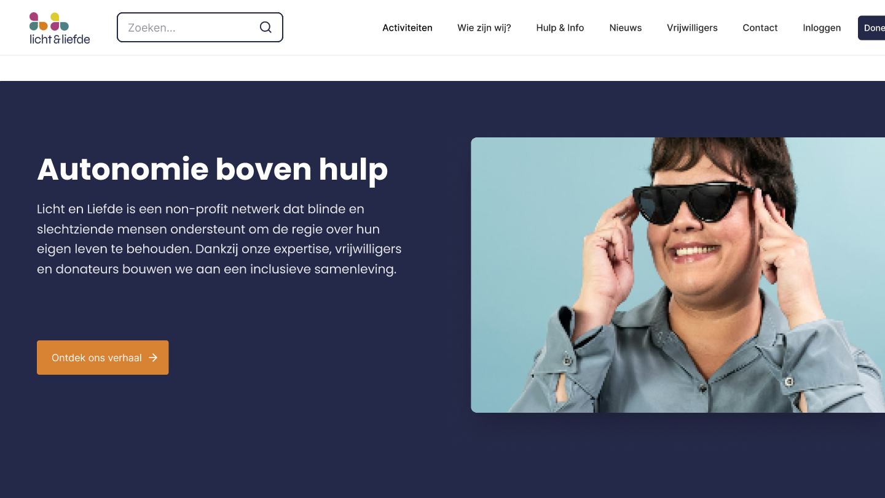
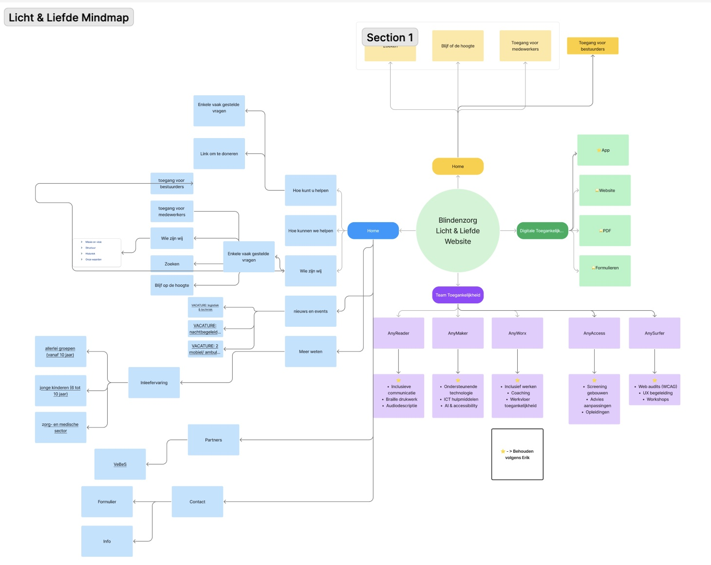
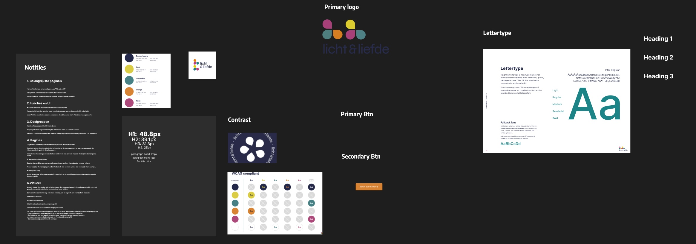
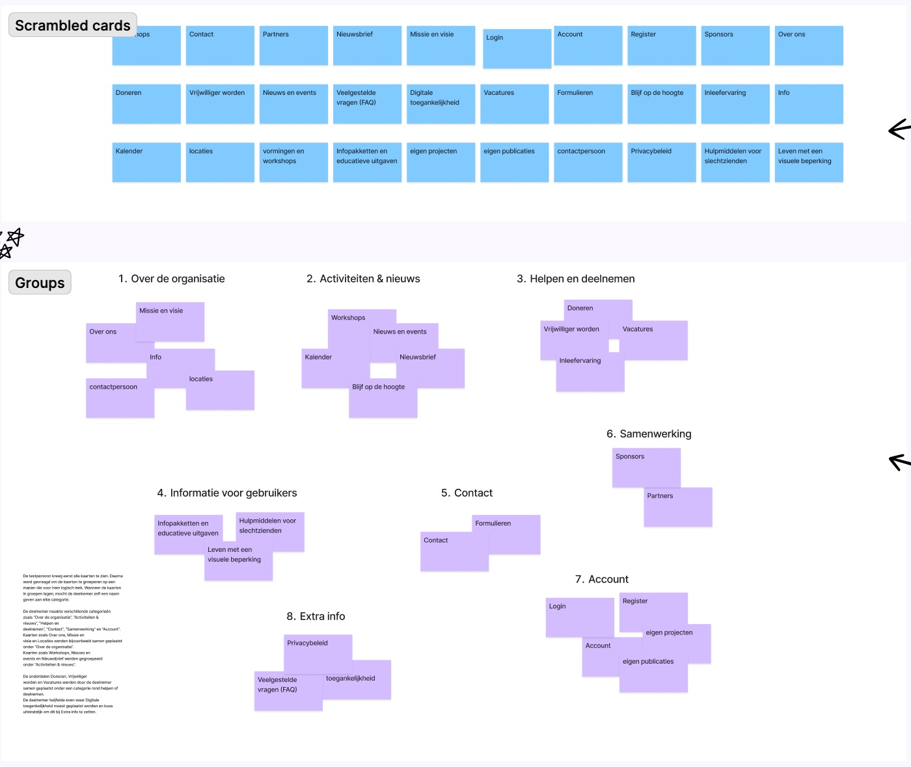
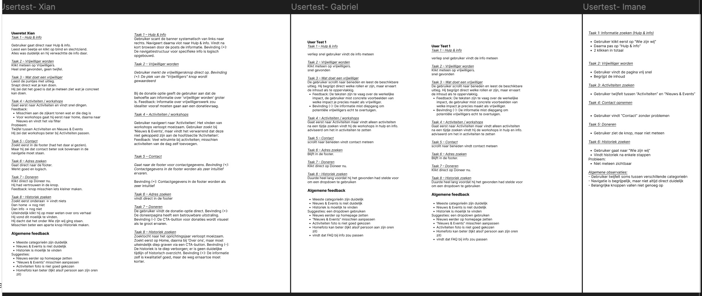

Licht & Liefde
Projectdetail
Licht & Liefde
Een schoolopdracht in groep waarin we de website van Licht & Liefde opnieuw ontwierpen.
Groepswerk voor school, niet in opdracht van Licht & Liefde.

Projectintro
Overzicht
Prototype
Klik zelf door het ontwerp.
Het prototype is interactief: klik op knoppen en links om door de pagina's te gaan.
Analyse
De bestaande site in kaart.
We begonnen met een mindmap van de huidige website. Vanuit de homepage brachten we alle pagina's en onderdelen in kaart, zoals Wie zijn wij, Hoe kunt u helpen, Nieuws en events, Partners en Contact, en ook de digitale toegankelijkheid en het team met diensten als AnyReader en AnySurfer. Zo zagen we hoeveel informatie er was, waar ze verspreid stond en wat we zeker moesten behouden.

Onze mindmap van de huidige website, met de onderdelen die we volgens de opdrachtgever moesten behouden.
Branding
Het merk als basis.
We vertrokken van de bestaande huisstijl van Licht & Liefde: het logo, de vijf merkkleuren (donkerblauw, geel, turquoise, oranje en roze) en het lettertype Inter. Daarop bouwden we een duidelijke typografische schaal en knoppen. Elke kleurcombinatie controleerden we op contrast volgens de WCAG-richtlijnen, zodat de teksten ook voor slechtziende mensen goed leesbaar zijn.

Ons brandingbord in Figma: notities, logo, kleuren, typografie, knoppen en de contrastcheck.
Toegankelijkheid
Een site voor iedereen.
Licht & Liefde ondersteunt blinde en slechtziende mensen. Onze nieuwe website moest daarom voor iedereen toegankelijk zijn: duidelijke structuur, leesbare teksten en een navigatie die je snel naar de juiste informatie brengt.
Testplan
De huidige structuur van de website sluit niet goed aan bij wat gebruikers verwachten. Met een nieuwe navigatiestructuur vinden ze informatie sneller en makkelijker terug.
Hoe groeperen gebruikers de informatie? Begrijpen ze de namen van de categorieën? Vinden ze snel wat ze zoeken? En welke onderdelen zijn onduidelijk?
Een kwalitatief onderzoek met card sorting en een digitale gebruikerstest van de navigatie. Deelnemers dachten luidop terwijl ze taken uitvoerden, zoals info zoeken over een visuele beperking, vrijwilliger worden, workshops zoeken en contact opnemen.
Drie deelnemers tussen 18 en 65 jaar, één per teamlid, uit ons eigen netwerk. Vooraf deden we een oefentest om de timing en de flow te controleren.
Card sorting
De testpersoon kreeg 30 kaartjes met de onderdelen van de website, zoals Over ons, Workshops, Doneren en Contact, en groepeerde ze zoals het voor hem logisch was. Daaruit kwamen acht groepen: Over de organisatie, Activiteiten & nieuws, Helpen en deelnemen, Informatie voor gebruikers, Contact, Samenwerking, Account en Extra info. Alleen bij 'Digitale toegankelijkheid' twijfelde hij waar het hoorde. Deze groepen gebruikten we als basis voor de nieuwe navigatie.

De card sorting in FigJam: de losse kaartjes bovenaan en de groepen die de testpersoon maakte onderaan.
Usertests
We testten ons ontwerp met drie gebruikers. Elke gebruiker kreeg dezelfde taken, zoals info vinden bij Hulp & info, vrijwilliger worden, een activiteit zoeken, contact opnemen, doneren en de historiek vinden. We noteerden wat vlot ging en waar ze twijfelden.
De meeste categorieën waren duidelijk en contact, adres en doneren werden meteen gevonden. Maar 'Nieuws & Events' was verwarrend naast 'Activiteiten', de workshops stonden op een onlogische plek en de historiek was moeilijk te vinden.
Op basis van de tests stelden we voor om de workshops onder Activiteiten te zetten, 'Nieuws & Events' duidelijker te maken, nieuws hoger op de homepage te tonen, de historiek bereikbaar te maken via een dropdown en contact ook bovenaan in de navigatie te zetten.

Onze notities van de drie usertests, per taak uitgeschreven.